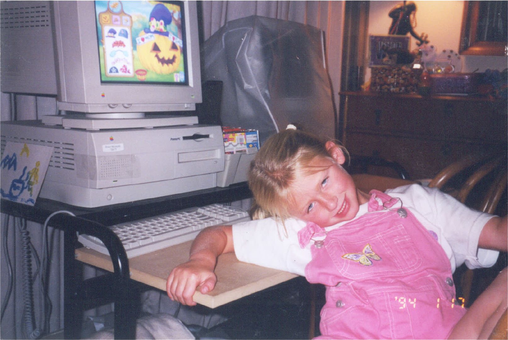

Designer
Researcher
Creator
Currently I am a graphic interaction design student at Santa Monica College with a concentration in UX design. Passionate about people, technology and design. I love to collaborate and work in teams. Let’s connect.